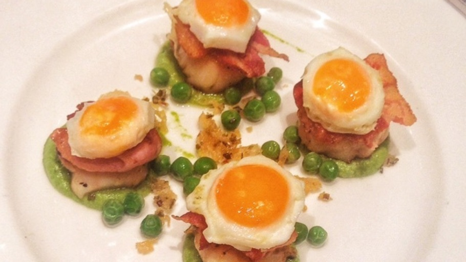

Kwek Kwek - Filipino Street Food

A popular street food in the Philippines, kwek kwek are hard-boiled quail eggs in orange batter that are deep fried and served with a sweet and sour sauce.
Per Serving:150 calories; protein 2.4g; carbohydrates 16.2g; fat 8.5g; cholesterol 76mg; sodium 133.1mg.
Full Nutrition
Ingredients
- 12 quail eggs
- 1/4 cup rice vinegar
- 1/4 cup ketchup
- 1/4 cup brown sugar
- 2 teaspoons soy sauce
- 1/2 cup water
- 1 cup all-purpose flour
- salt and freshly ground black pepper to taste
- oil for deep frying
- 1/4 cup cornstarch
- bamboo skewer
Directions
- Step 1:Place eggs in a saucepan and cover with water. Bring to a boil, reduce heat to medium, cover, and cook for 4 minutes. Remove from heat and let stand, covered, for 2 minutes. Rinse eggs in cold water and cool to room temperature; peel.
- Step 2:Combine rice vinegar, ketchup, brown sugar, and soy sauce in a saucepan. Cook and stir over medium until sugar has dissolved, about 5 minutes. Let cool.
- Step 3:Prepare batter by adding red and yellow food coloring to the water to get a deep orange color. Combine flour, salt, and pepper in a bowl; pour in orange water and stir until there are no lumps.
- Step 4:Heat oil in a wok to 375 degrees F (190 degrees C).
- Step 5:Gently roll eggs in cornstarch to coat and shake off excess cornstarch. Dip into orange batter so they are fully covered. Poke eggs with the bamboo skewer and drop gently into the hot oil. Deep fry until the batter is crispy, about 2 minutes per side. Remove eggs with a slotted spoon and drain on paper towels.